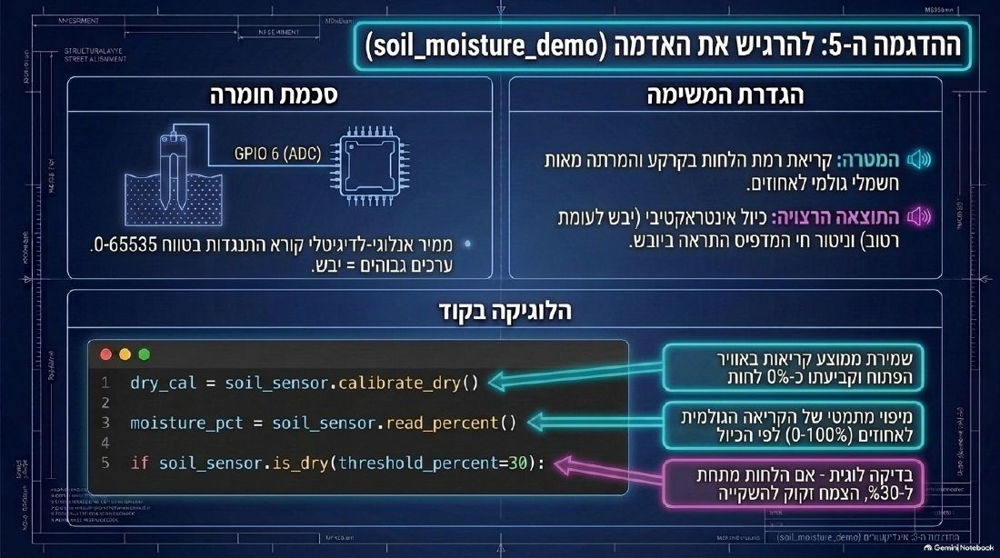

💧 = ⚡
החשמל הוא מים
לחץ · זרימה · צינור סגור
בשיעור 5 מדדנו ביד.
מי ימדוד בלילה? 🌙
חיישן שמודד לבד ✅
אבל הוא צריך חשמל. אז מה זה חשמל? ⚡
🧪 בקבוק + צינור
⬆️💦
מגביהים
הסילון חזק יותר
🤏💧
לוחצים על הצינור
פחות זורם
〽️🚫
מקפלים
הכול נעצר
💧 מים
לחץ
כמה חזק דוחפים
⚡ חשמל
וולט (V)
הפינים שלנו: 3.3V
💧 כמה מים זורמים = ⚡ אמפר (A)
יותר מדי = חום ונזק
💧 צינור צר = ⚡ התנגדות
אותו לחץ בצינור צר יותר – זורם פחות
🔁
סגור
יוצא, עובר בנורית, חוזר
✂️
פתוח
צינור קרוע – כלום לא זורם
💥
קצר
צינור עוקף – חם ומסוכן
סגור – אבל לא קצר!
🗺️ מילון: מים ⇄ חשמל
הלוח מקבל 5V מה-USB.
למה החיישן מקבל רק 3.3V? 🤔
הפינים של הלוח = צינורות דקים של 3.3V
💥 לחץ של 5V מפוצץ צינור דק – והפין נשרף
חיישן תמיד מ-3V3
3 הצינורות של החיישן
💧 VCC → 3V3
מביא חשמל
↩️ GND → GND
מחזיר – סוגר את המעגל
📟 AOUT → GPIO 6
"שעון המים" – מדווח ללוח

🛡️ 5 כללים
🔮 לשיעור 6
"שעון המים" ישלח מספר בין 0 ל-65535
אדמה יבשה – גבוה או נמוך?
⭐ באיזה "צינור" בפרויקט שלכם הכי חשוב שהלחץ יהיה נכון?